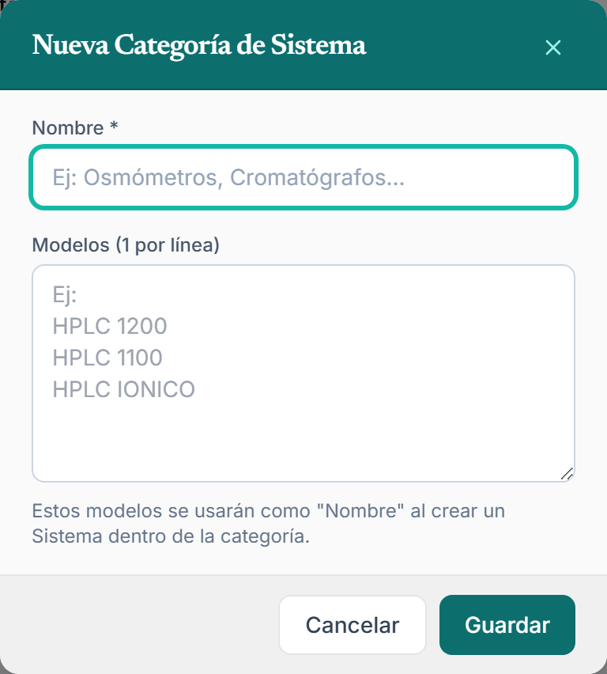
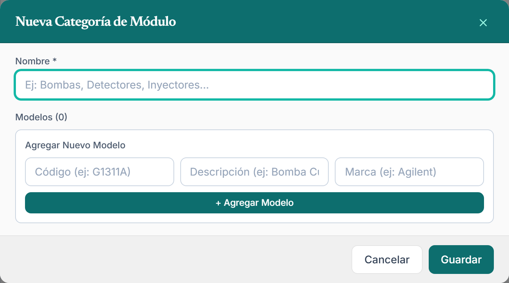
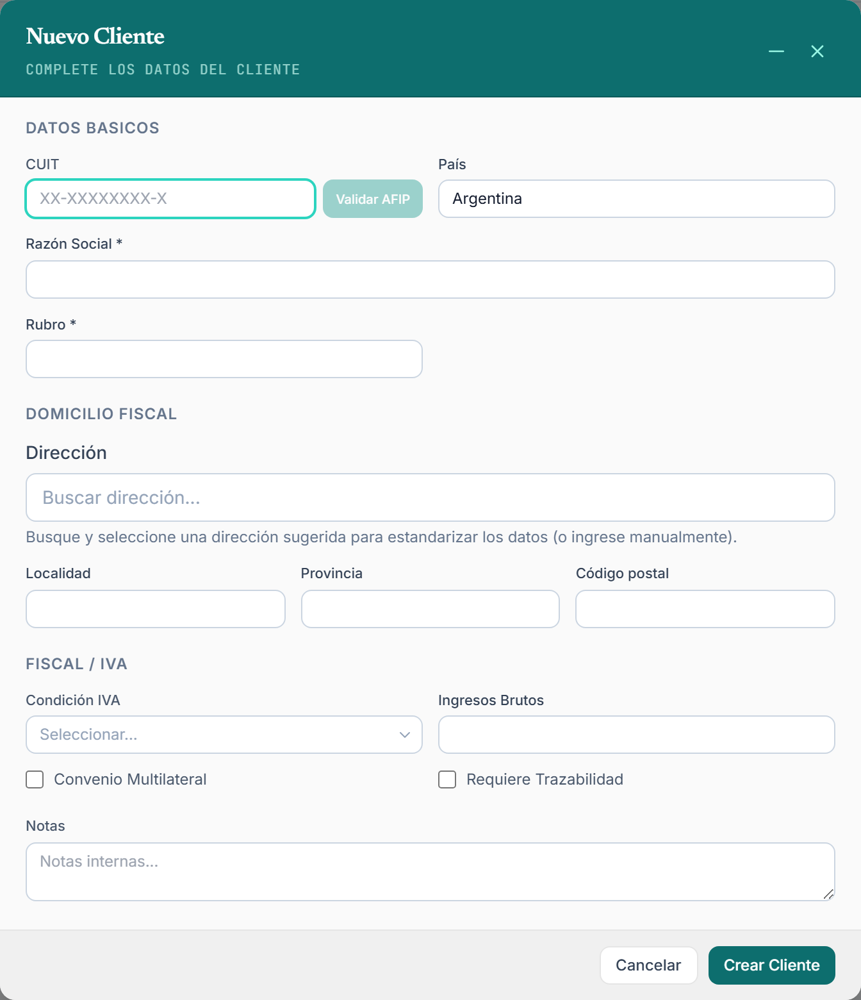
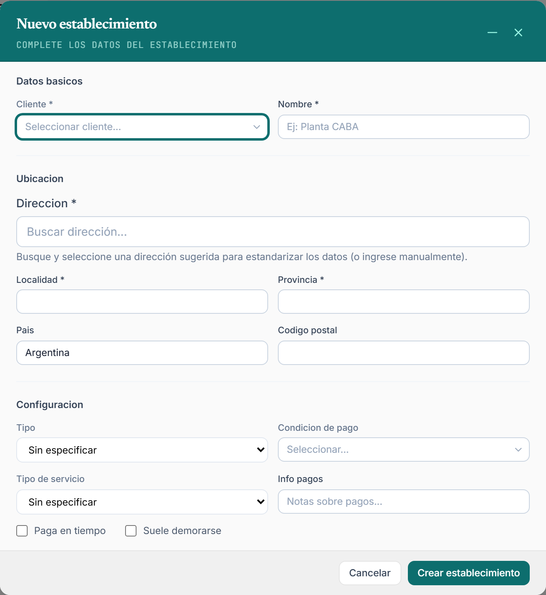
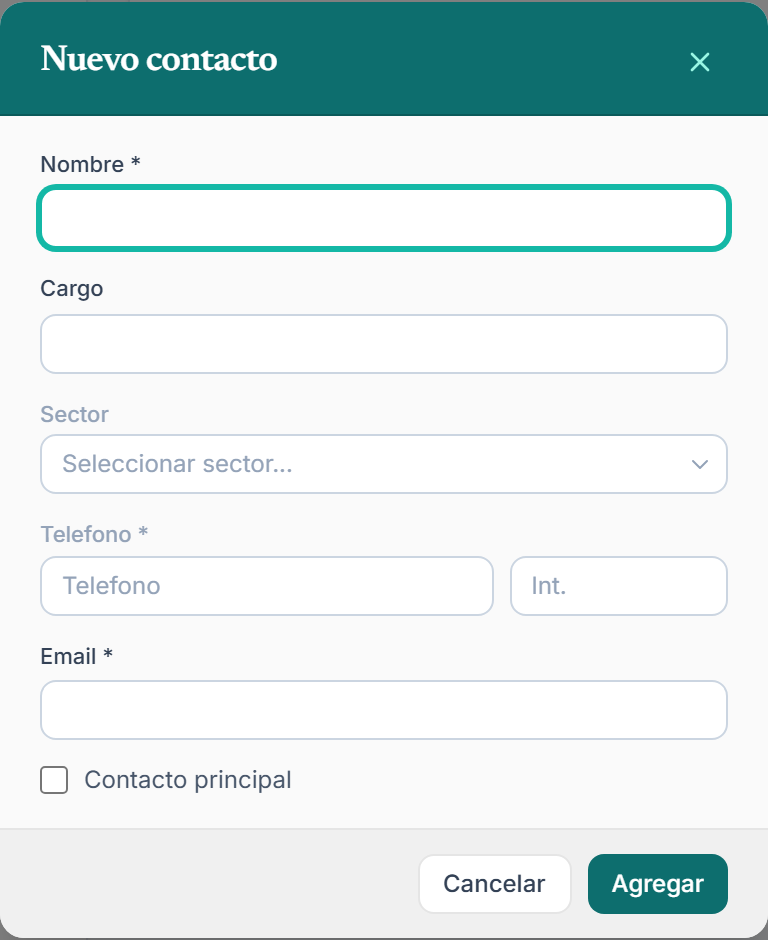
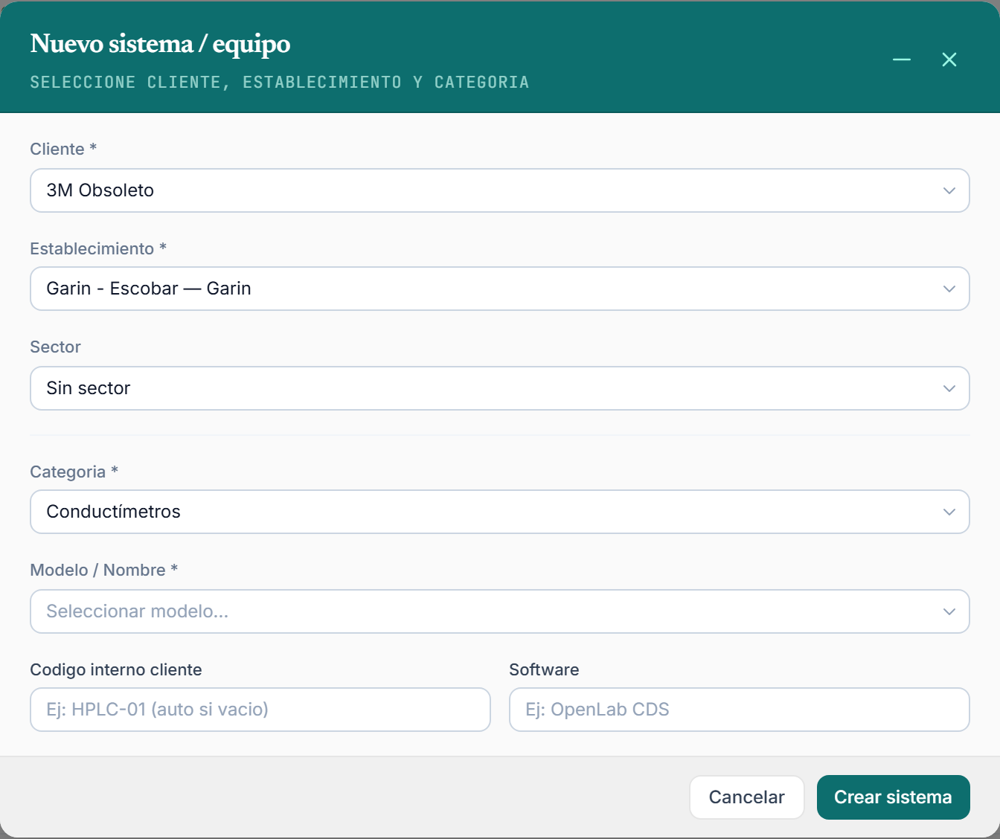

Cómo dar de alta categorías, clientes, establecimientos y equipos en el sistema, paso a paso.
Versión 1.0 · Junio 2026
Alcance: módulos de Clientes, Establecimientos, Equipos y Categorías.
Contenido
Índice
1Antes de empezar: cómo está organizado el sistema
2El orden correcto de carga (muy importante)
3Cómo moverse: menú, pestañas y buscadores
4Paso 1 — Categorías (de Sistemas y de Módulos)
5Paso 2 — Dar de alta un Cliente
6Paso 3 — Dar de alta un Establecimiento
6·Cargar los Contactos del establecimiento
7Paso 4 — Dar de alta un Equipo (Sistema) y sus Módulos
8Resumen de campos obligatorios
9Preguntas frecuentes y errores comunes
Capítulo 1
Antes de empezar
El sistema guarda la información de manera jerárquica: cada cosa "cuelga" de otra. Entender esta estructura es la clave para cargar los datos sin errores. De arriba hacia abajo:
🏢 Cliente La empresa. Ej: "Laboratorios XYZ S.A."
└─ contiene ─▶
📍 Establecimiento Una planta / sede física del cliente. Ej: "Planta CABA"
└─ contiene ─▶
⚙️ Equipo / Sistema El instrumento. Ej: "HPLC 1260"
└─ contiene ─▶
🔩 Módulo Una parte del equipo. Ej: "Bomba cuaternaria", "Detector DAD"
En palabras simples: un Cliente tiene uno o varios Establecimientos; en cada Establecimiento hay uno o varios Equipos (instrumentos); y cada Equipo puede tener varios Módulos (sus componentes).
👤 ¿Y los contactos?
Las personas de contacto (quién atiende, su teléfono y mail) se cargan en el Establecimiento, no en el cliente. Tiene sentido: cada planta tiene su propia gente. Por eso los contactos se ven más adelante, junto con el establecimiento (Capítulo 6).
¿Y las Categorías?
Las Categorías son un catálogo maestro: una lista de "tipos" de equipos y de módulos que el sistema ya conoce. Son como un menú de opciones predefinidas. Hay dos catálogos:
Categorías de Sistemas — los tipos de equipo y sus modelos. Ej: la categoría "Cromatógrafos HPLC" con los modelos HPLC 1260, HPLC 1100, HPLC Iónico.
Categorías de Módulos — los tipos de componente y sus modelos con código. Ej: la categoría "Bombas" con el modelo G1311A — Bomba Cuaternaria.
⭐ La regla más importante
Para poder elegir un equipo o un módulo al cargarlo, ese tipo tiene que existir primero en Categorías. Cuando creás un equipo, el sistema te pide elegir una Categoría (obligatorio) y luego un modelo de esa categoría. Si la categoría o el modelo no existen todavía, hay que crearlos antes — o usar la opción Otro (ingresar manualmente) para cargarlo a mano esa vez.
Por eso este instructivo arranca por las Categorías y recién después carga clientes y equipos.
Capítulo 2
El orden correcto de carga
Como cada dato depende del anterior, conviene cargarlos en este orden. Si lo respetás, nunca te vas a quedar "trabado" porque falta algo de un paso previo.
Categorías
Primero el catálogo: las Categorías de Sistemas (tipos de equipo + modelos) y las Categorías de Módulos (tipos de componente + modelos).
Esto se hace una sola vez y después se reutiliza para todos los clientes.
Cliente
Damos de alta la empresa.
Establecimiento
Dentro del cliente, cargamos su planta o sede.
Equipo (Sistema) y Módulos
Por último, el instrumento dentro del establecimiento, eligiendo su categoría y modelo; y opcionalmente sus módulos.
ℹ️ Buena noticia
Las Categorías se cargan una sola vez. La primera vez es la más trabajosa; después, dar de alta clientes y equipos es muy rápido porque las opciones ya están listas para elegir.
✓ Atajo recomendado
La forma más cómoda de cargar es desde la ficha del Cliente: una vez creado el cliente, abrís su ficha y desde ahí mismo agregás sus establecimientos y equipos con el botón + Agregar. El cliente ya queda pre-seleccionado, así que no podés equivocarte de empresa.
Capítulo 3
Cómo moverse en el sistema
El menú lateral
A la izquierda está el menú principal, agrupado por áreas. Para esta guía vas a usar sobre todo dos grupos:
Comercial › Clientes — para dar de alta y buscar clientes (y desde ahí, sus establecimientos y equipos).
Operaciones › Equipos — el listado de todos los equipos, y el acceso a Categorías.
Hacé clic en el nombre del grupo (por ejemplo Comercial) para que se despliegue y ver las opciones de adentro.
Pestañas (varias cosas abiertas a la vez)
El sistema funciona con pestañas, parecido a un navegador: podés tener abierto un cliente y el listado de equipos al mismo tiempo, y cambiar de uno a otro sin perder lo que estabas viendo.
Buscadores y listas
En los formularios, muchos campos son buscadores desplegables: hacés clic, escribís parte del nombre y el sistema filtra las opciones. Así elegís el cliente, el establecimiento o la categoría sin tener que recorrer toda la lista.
⭐ Los campos con asterisco son obligatorios
En todos los formularios, los campos marcados con * son obligatorios: el sistema no te deja guardar hasta completarlos. El resto son opcionales y los podés cargar ahora o después.
Capítulo 4 · Paso 1
Categorías
Es el catálogo maestro que alimenta el alta de equipos y módulos. Se carga una vez y se reutiliza siempre.
Cómo llegar
Entrá a Operaciones › Equipos y, arriba a la derecha del listado, hacé clic en el botón Categorías. Vas a ver una pantalla con dos pestañas: Categorías de Sistemas y Categorías de Módulos.
4.1 — Categorías de Sistemas (tipos de equipo)
Agrupan los equipos por familia y guardan la lista de modelos disponibles.
En la pestaña Categorías de Sistemas, hacé clic en + Nueva Categoría.
Completá Nombre * — el nombre de la familia. Ej: Cromatógrafos HPLC, Osmómetros, Espectrofotómetros UV.
En Modelos (1 por línea), escribí un modelo por renglón. Ej:
📝 Ejemplo
HPLC 1260 HPLC 1100 HPLC Iónico
Estos modelos van a aparecer como opciones de "Nombre" cuando cargues un equipo de esta categoría.
Hacé clic en Guardar. La categoría queda en la lista y la podés Editar o Eliminar cuando quieras.

Nueva Categoría de Sistema. El nombre de la familia y, debajo, un modelo por línea.
4.2 — Categorías de Módulos (tipos de componente)
Agrupan los componentes (bombas, detectores, inyectores, etc.). Cada modelo lleva un código.
Pasá a la pestaña Categorías de Módulos y hacé clic en + Nueva Categoría.
Completá Nombre * — el tipo de componente. Ej: Bombas, Detectores, Inyectores.
Agregá al menos un modelo* (es obligatorio tener uno como mínimo). Para cada uno:
Código * — Ej: G1311A
Descripción — Ej: Bomba Cuaternaria
Marca — Ej: Agilent
Hacé clic en + Agregar Modelo (o Enter) para sumarlo a la lista. Repetí por cada modelo.
Cuando tengas todos los modelos, hacé clic en Guardar.

Nueva Categoría de Módulo. Cada modelo lleva Código, Descripción y Marca; se suman con + Agregar Modelo.
⭐ Recordá
Esta es la base de todo. Si más adelante, al cargar un equipo, no encontrás su tipo o su modelo en las listas, lo más probable es que falte crearlo acá primero.
Capítulo 5 · Paso 2
Dar de alta un Cliente
El cliente es la empresa a la que le prestamos servicio. Es el primer dato "real" que vas a cargar.
Cómo llegar
Entrá a Comercial › Clientes y hacé clic en el botón + Nuevo Cliente. Se abre una ventana (modal) con el formulario.
Datos Básicos
CUIT (opcional pero recomendado) — escribilo con el formato XX-XXXXXXXX-X. Si hacés clic en Validar AFIP, el sistema verifica el CUIT y, si lo encuentra, te autocompleta solo la razón social y el domicilio fiscal.
Razón Social * — el nombre legal de la empresa. Obligatorio.
Rubro * — la actividad. Ej: Farmacéutica, Alimentos. Obligatorio.
País — viene precargado como Argentina.
Domicilio fiscal (opcional)
Dirección, Localidad, Provincia y Código postal. Si usaste Validar AFIP, puede venir completado. La Dirección tiene autocompletado: empezá a escribir y elegí de la lista para que complete localidad y provincia.
Fiscal / IVA (opcional)
Condición IVA — Monotributo, Responsable Inscripto, Exento, Consumidor Final u Otro.
Ingresos Brutos y Convenio Multilateral.
Requiere Trazabilidad — tildalo si los informes de este cliente deben incluir documentación de trazabilidad.
Notas (opcional)
Texto libre para observaciones internas sobre el cliente.
Cuando termines, hacé clic en Crear Cliente. El sistema te lleva directo a la ficha del cliente, donde vas a cargar sus establecimientos y equipos.

Modal Nuevo Cliente. Solo Razón Social y Rubro son obligatorios; el botón Validar AFIP autocompleta datos.
✓ Solo dos campos obligatorios
Para crear un cliente alcanza con Razón Social y Rubro. Todo lo demás lo podés completar ahora o editarlo más tarde desde la ficha del cliente.
Capítulo 6 · Paso 3
Dar de alta un Establecimiento
El establecimiento es la planta o sede física del cliente donde están los equipos. Un cliente puede tener varios.
⚠ Requisito previo
El Cliente tiene que existir antes. El establecimiento siempre "cuelga" de un cliente.
Cómo llegar (forma recomendada)
Abrí la ficha del cliente (desde Comercial › Clientes, hacé clic en el cliente).
Buscá la sección Establecimientos y hacé clic en + Agregar. Se abre el formulario con el cliente ya pre-seleccionado.
Completá el formulario
Cliente * — ya viene cargado si entraste desde la ficha. (Si abrís el formulario suelto, elegilo del buscador.)
Nombre * — cómo identificás la sede. Ej: Planta CABA, Sede Tortuguitas. Obligatorio.
Dirección * — con autocompletado: escribí y elegí de la lista. Al elegir, completa solos la localidad, provincia y código postal. Obligatorio.
Localidad * y Provincia * — obligatorios (suelen quedar completos por el autocompletado).
País y Código postal — opcionales.
Configuración (opcional)
Tipo — Planta, Sucursal, Oficina, Laboratorio u Otro.
Condición de pago y Tipo de servicio (Contrato / Per incident).
Info pagos, y los tildes Paga en tiempo / Suele demorarse.
Hacé clic en Crear establecimiento.

Modal Nuevo Establecimiento. Obligatorios: Cliente, Nombre, Dirección, Localidad y Provincia.
✓ Obligatorios
Cliente, Nombre, Dirección, Localidad y Provincia. El resto es opcional.
Capítulo 6 (continuación)
Contactos del establecimiento
Los contactos son las personas con las que coordinamos en cada planta (responsable de laboratorio, compras, mantenimiento, etc.). Se cargan dentro de cada establecimiento — así cada sede tiene su propia lista.
⚠ Dónde se cargan
Los contactos no están en el formulario del cliente. Se agregan desde la ficha del establecimiento, en la sección Contactos.
Cómo llegar
Abrí la ficha del establecimiento (desde la ficha del cliente, hacé clic en el establecimiento; o desde su listado y clic en el nombre).
Buscá la sección Contactos y hacé clic en + Agregar. Se abre la ventana Nuevo contacto.
Completá el contacto
Nombre * — nombre y apellido de la persona. Obligatorio.
Cargo (opcional) — el puesto. Ej: Jefe de Laboratorio, Compras.
Sector (opcional) — el sector al que pertenece. Podés elegir uno existente o crear uno nuevo escribiéndolo y tocando Crear sector. (El sector ayuda a que el técnico vea el contacto correcto al hacer el informe.)
Teléfono * e Int. — el teléfono y, al lado, el interno si tiene.
Email * — el correo de la persona. Obligatorio.
Contacto principal — tildalo si es el contacto de referencia de esa planta. Solo uno por establecimiento puede ser principal.
Hacé clic en Agregar. El contacto queda listado y lo podés Editar o Eliminar cuando quieras.

Modal Nuevo contacto. Obligatorios: Nombre y Email. El Sector permite elegir uno existente o crear uno nuevo.
✓ Cargá varios
Podés agregar todos los contactos que necesites por establecimiento. Marcá como principal al de referencia para tenerlo siempre a mano.
Capítulo 7 · Paso 4
Dar de alta un Equipo (Sistema)
El equipo —o "sistema"— es el instrumento físico instalado en un establecimiento del cliente. Es el alta más completa, porque conecta todo lo anterior.
⚠ Requisitos previos
Para cargar un equipo necesitás que ya existan: (1) el Cliente, (2) su Establecimiento, y (3) la Categoría del equipo (con el modelo en su lista). Si falta la categoría o el modelo, podés crearla antes (Capítulo 4) o usar Otro (ingresar manualmente).
Cómo llegar (forma recomendada)
Desde la ficha del cliente, en la sección Equipos, hacé clic en + Agregar. (También podés ir a Operaciones › Equipos y usar + Nuevo Sistema.)
Completá el formulario, en orden
Cliente * — elegí la empresa (ya viene cargado si entraste desde su ficha).
Establecimiento * — al elegir el cliente, este buscador muestra solo sus sedes. Elegí dónde está el equipo.
Sector (opcional) — el sector dentro de la planta, si aplica. Podés elegir uno existente o crear uno nuevo escribiéndolo.
Categoría * — elegí la familia del equipo del catálogo (las que creaste en el Capítulo 4).
⭐ Acá se aplica la regla
La Categoría es obligatoria y define qué modelos vas a poder elegir en el paso siguiente.
Modelo / Nombre * — depende de la categoría elegida:
Si la categoría tiene modelos cargados, aparece un desplegable con esos modelos. Elegí el que corresponde.
Si el modelo no está en la lista, elegí Otro (ingresar manualmente) y escribilo a mano en el campo que aparece.
Si la categoría no tiene modelos, vas a ver un campo de texto libre para escribir el nombre.
Código interno cliente (opcional) — el código que usa el cliente para el equipo. Si lo dejás vacío, el sistema le asigna uno provisorio automáticamente.
Software (opcional) — el software del equipo. Ej: OpenLab CDS, ChemStation.
Hacé clic en Crear sistema. Te lleva a la ficha del equipo, donde podés agregar sus módulos.

Modal Nuevo Equipo. Al elegir el cliente aparece el Establecimiento; al elegir la categoría aparece Modelo / Nombre. Así la categoría define los modelos disponibles.
ℹ️ Equipos de gases (GC)
Si el equipo es un cromatógrafo gaseoso (el nombre o la categoría contienen "gaseoso"/"GC"), aparece automáticamente una grilla extra para configurar los puertos de inyección (Front / Back / Aux) y los detectores (FID, NPD, ECD, TCD, MSD, etc.). Completala según el equipo; todos esos campos son opcionales.
Capítulo 7 (continuación)
Agregar Módulos al equipo
Los módulos son los componentes del equipo (bomba, detector, inyector, etc.). Se agregan desde la ficha del equipo, una vez creado.
En la ficha del equipo, buscá la sección Módulos y hacé clic en + Agregar Módulo.
Categoría de Módulo — elegí el tipo de componente del catálogo (las de la pestaña Categorías de Módulos). Al elegirla, aparece un segundo desplegable de Modelo.
Modelo * — elegí el modelo. Su código y descripción se completan solos.
Si el componente no está en el catálogo, podés cargarlo a mano: dejá la categoría sin elegir y escribí el Nombre del módulo.
Opcional: Número de serie, Versión de firmware y Observaciones.
Hacé clic en Agregar. Repetí por cada componente del equipo.
⭐ Misma regla que con los equipos
Para elegir un módulo del catálogo, su tipo y modelo tienen que existir en Categorías de Módulos. Si no están, creálos primero (Capítulo 4.2) o cargá el módulo manualmente con la opción de nombre libre.
✓ Un equipo puede no tener módulos
No es obligatorio cargar módulos. Si el equipo no tiene componentes para detallar, podés dejar la sección vacía y agregarlos más adelante.
Capítulo 8
Resumen de campos obligatorios
Lo mínimo indispensable para guardar cada cosa. Todo lo que no esté acá es opcional.
Cada flecha significa "necesita que exista antes":
CATEGORÍAS
➜
CLIENTE
➜
ESTABLECIMIENTO
➜
EQUIPO
➜
MÓDULO
Capítulo 9
Preguntas frecuentes
No encuentro la categoría / el modelo de mi equipo al cargarlo
Es porque todavía no está en el catálogo. Tenés dos opciones: (a) ir a Equipos › Categorías y crearlo (lo ideal si lo vas a usar seguido), o (b) elegir Otro (ingresar manualmente) y escribirlo a mano solo para ese equipo.
El buscador de Establecimiento aparece vacío
Primero tenés que elegir el Cliente. El listado de establecimientos se filtra para mostrar únicamente los de ese cliente. Si el cliente no tiene ninguno cargado, creá el establecimiento primero (Capítulo 6).
¿Dónde cargo los contactos de la empresa?
En la ficha del establecimiento, sección Contactos (no en el formulario del cliente). Cada planta tiene su propia lista de contactos. Mínimo se pide Nombre y Email. Ver Capítulo 6 (continuación).
¿Tengo que cargar el CUIT del cliente sí o sí?
No es obligatorio para crear el cliente, pero es muy recomendable. Si lo cargás y usás Validar AFIP, el sistema autocompleta varios datos por vos. Lo podés agregar después desde la ficha.
¿Puedo cargar un equipo sin módulos?
Sí. Los módulos son opcionales. Podés crear el equipo y agregarle los componentes más tarde desde su ficha.
Dejé el "Código interno cliente" vacío, ¿está mal?
No. Si lo dejás en blanco, el sistema le asigna un código provisorio automático. Después podés editarlo y poner el código real del cliente.
¿Por qué no me deja guardar?
Seguramente falta un campo obligatorio (marcado con *). Revisá que estén completos los que figuran en el resumen del Capítulo 8. El sistema avisa cuál falta.
¿Dónde quedan guardados los datos?
Todo se guarda en la nube de forma automática al hacer clic en el botón de guardar/crear. No hace falta "exportar" ni guardar manualmente: apenas confirmás, el dato ya está disponible para todos.